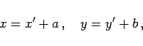

Inhalt Index DeskTop Bronstein

 Geometrie Vektoralgebra und analytische Geometrie Analytische Geometrie der Ebene Ebene Koordinatensysteme und deren Transformationen
Geometrie Vektoralgebra und analytische Geometrie Analytische Geometrie der Ebene Ebene Koordinatensysteme und deren Transformationen


Beim Übergang von einem kartesischen Koordinatensystem zu einem anderen ändern sich die Koordinaten nach den folgenden Regeln:
|  | (3.308a) |
| (3.308b) |
 |
(3.309a) |
Die zum diesem System aus zwei Gleichungen gehörende Koeffizientenmatrix lautet:
Sie wird Drehungsmatrix genannt.
Allgemein betrachtet läßt sich einÜbergang von einem Koordinatensystem in ein anderes durch eine Transformation durchführen, die aus einer Translation und einer Rotation, d.h. aus einer Parallelverschiebung und einer Drehung besteht.